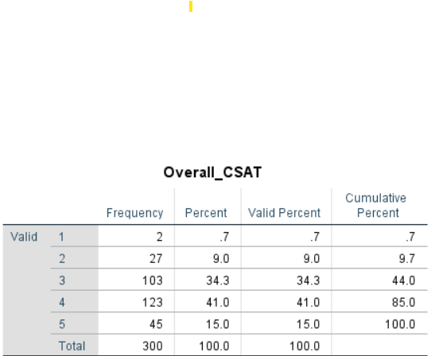
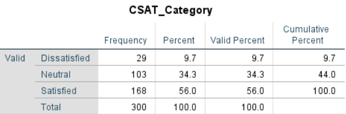
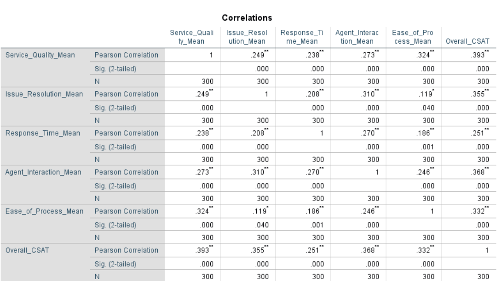
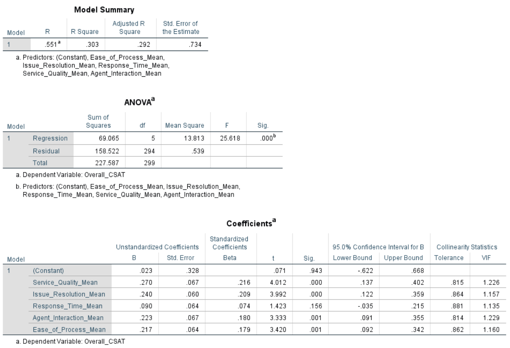

Customer Satisfaction (CSAT) & Service Experience Analysis Using SPSS
PROJECT OVERVIEW
This project examines customer satisfaction and explores how five service-experience dimensions are associated with Overall Customer Satisfaction (CSAT). Using SPSS, I conducted descriptive analysis, reliability testing, correlation analysis, multiple linear regression, ANOVA, and Chi-square tests to identify potential customer-satisfaction improvement areas.
RESEARCH OBJECTIVE
To understand customer satisfaction levels and evaluate the relationship between satisfaction and five service-experience dimensions:
- Service Quality
- Issue Resolution
- Response Time
- Agent Interaction
- Ease of Process
METHODOLOGY
- Descriptive analysis of Overall CSAT
- Internal consistency assessment using Cronbach's Alpha
- Pearson correlation analysis
- Multiple linear regression
- ANOVA for demographic differences
- Chi-square tests of association between satisfaction categories and selected respondent characteristics
KEY FINDINGS
- Overall customer satisfaction: the CSAT score was 56.0% (respondents rating satisfaction 4 or 5 on a 5-point scale), with 34.3% neutral and 9.7% dissatisfied. The neutral segment represents an opportunity to investigate barriers to higher satisfaction.
- Correlation analysis: all five service-experience dimensions were positively correlated with Overall CSAT, and all correlations were statistically significant at p < .001.
- Multiple linear regression: the overall model was statistically significant (R² = 0.303, Adjusted R² = 0.292, F(5, 294) = 25.618, p < .001), explaining 30.3% of the variation in Overall CSAT. Service Quality had the highest standardized beta, followed closely by Issue Resolution. Response Time was not a statistically significant independent predictor after controlling for the other dimensions.
- Segment analysis: ANOVA did not identify statistically significant differences in Overall CSAT across age groups, gender groups, or regions. The Chi-square analysis also found no statistically significant association between CSAT category and contact channel; tests involving issue type and income group were also non-significant.
BUSINESS RECOMMENDATIONS
- Strengthen service quality: review service accuracy, consistency, and delivery against customer expectations.
- Improve issue resolution: investigate whether solutions adequately address customers' original concerns.
- Develop agent interactions: reinforce professionalism, customer understanding, and helpfulness.
- Simplify service processes: identify unnecessary steps and reduce customer effort.
- Investigate neutral customers: explore why a substantial share of respondents are neither satisfied nor dissatisfied.
- Monitor response time alongside other drivers: although it was positively correlated with CSAT, it was not a significant independent predictor in the regression model.
These are recommendations derived from observed associations, not proof of causal effects.
LIMITATIONS
- Findings are based on a sample of 300 respondents and may not generalize to other populations.
- Correlation and regression results do not establish causality.
- The regression model explains 30.3% of the variation in Overall CSAT; other factors may also contribute.
- Non-significant results indicate insufficient evidence of an association or group difference, not proof that no relationship exists.
- The data source and sampling approach should be disclosed clearly.
SKILLS DEMONSTRATED
- SPSS
- Survey Analytics
- Statistical Analysis
- CSAT Study



